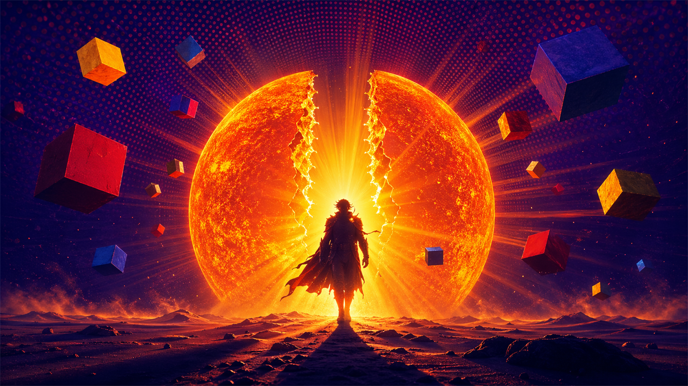

Section 31 — 戰績分享
生成我的太陽英雄卡
一鍵產出 1080×1920 IG 限動尺寸英雄卡，分享你的星盤戰績。

「我是那道光——在黑暗不存在之前，我就在了。」
古希臘世界裡，太陽有兩張臉：赫利俄斯（Helios）是每日駕馬車橫渡天空的原始日神，代表物理意義上的光與時間；阿波羅（Apollo）是藝術、預言、療癒的神，代表人類意識層面的光。
占星學中的「太陽」繼承了兩者——它既是你最原始的生命力（活下去的驅動），也是你意識上想要成為的自我理想。當你問「我是誰？」，你在問的就是你的太陽。
太陽是你星盤的主角光環。其他行星圍繞它轉，而它決定了你的英雄劇本：你要在哪個舞台發光（宮位），以及你的英雄特質是什麼（星座）。
太陽能量不是單一的——它包含五大能量軸線，你的星座與宮位決定了哪條軸最強。
你設定方向並排除萬難的能力。太陽在牡羊、獅子、天蠍的人，這條軸通常最飽滿。
把內在視野外化成具體形式的能力。第五宮或火象星座的太陽者最為顯著。
讓他人理解你、感受你的能力。風象星座太陽與第三宮、第一宮太陽強化這條軸。
相信自己有資格佔據空間的內在確信。獅子座、第一宮、木星相位的太陽特別強。
帶動他人走向共同目標的能力。第十宮太陽、牡羊座、土象星座太陽以不同方式展現。
第一宮是「你本人」的宮位——外型、性格、給人的第一印象，以及你如何本能地面對新情境。上升點就在這裡。
太陽在第一宮的人，驅動力來自「被看見本人」。他們需要真實呈現自我，而非透過角色或成就被認可。
通常有強烈的個人風格，直接、自信、存在感強。可能難以隱藏情緒，或在被忽視時感到特別不適。
第二宮管理你的資源——有形的金錢財物，以及無形的才能、技能，還有你如何評價自己的「值多少」。
太陽在第二宮的人，認同感與財務/才能高度綁定。他們需要通過建立「有用的、有價值的自我」來確認身份。
對金錢或物質有強烈的主見，可能是天生的生財者，或長期糾結於自我價值的人——通常兩者都有過。
第三宮是「說話與思考」的宮位——你如何組織語言、接收資訊、與周遭環境交換訊息，以及手足關係。
太陽在第三宮的人，通過表達與學習來定義自己。說話、寫作、提問、解釋——是他們活出自我的主要管道。
通常話多（或有強烈的內在獨白），知識面廣，對新資訊敏感。可能在多種領域同時感興趣，難以聚焦是常見的功課。
第四宮是「家」的宮位——原生家庭、情感根基、你私下的樣子，以及你如何在人生後半段活出完整自我。
太陽在第四宮的人，在私密、家庭、與根源連結的脈絡中最能發光。他們的能量需要「安全的地基」才能完全展開。
外人可能看到他們相對低調，但在家或親密關係中完全是另一個人——充滿能量、有主見、甚至是支柱型的存在。
第五宮是太陽在占星學中「本家」宮位（傳統上由獅子座和太陽統治）。這裡是創造、表演、戀愛、孩子與純粹樂趣的舞台。
太陽在第五宮的人，需要舞台——被注視、被欣賞、被愛。他們通過創作或表演確認「我真的在這裡，我真的活著」。
天生的娛樂者，充滿活力、愛冒險，可能對戀愛或藝術有強烈執著。工作若少了創意成分，他們會逐漸熄滅。
第六宮是每日例行工作、身體健康、服務他人，以及透過反覆鍛練精進技藝的場域。不是事業成就，而是過程與紀律。
太陽在第六宮的人，「有用」是他們的核心需求。被需要、把事情做好、在細節中發現意義——這些是他們活出太陽的方式。
極度重視品質與效率，有時對自己或他人要求苛刻。健康問題往往反映自我要求過高的信號，身體是他們的太陽晴雨表。
第七宮是「我」的鏡像——你在重要關係中如何定義自己，你吸引什麼樣的人，以及你在合夥中發光的方式。
太陽在第七宮的人，身份認同需要「另一個人」作為鏡子。這不是依賴，而是他們在關係動態中才能找到最完整的自己。
天生的合作者，重視公平與平衡。常吸引強勢或有個性的伴侶——那些人其實映照了他們自己還沒整合的太陽面向。
第八宮是「底層真相」的宮位——心理創傷、死亡議題、他人的資源（遺產、投資）、性能量，以及你如何在危機中蛻變。
太陽在第八宮的人，需要「真正的深度」才能活著——他們無法忍受表面。危機、秘密、極限體驗是他們的太陽燃料。
洞察力極強，對人的動機看得很透，但也因此容易不信任他人。人生中往往有幾次「徹底重置」的時刻，每次蛻變後更強。
第九宮是「意義的宮位」——你相信什麼、你對世界有什麼理解、遠方的文化與高等教育如何塑造你的世界觀。
太陽在第九宮的人，需要「更大的答案」才能活得下去。哲學、旅行、不同文化、真理探索——是他們的太陽氧氣。
天生的老師或探索者，愛說自己的人生觀。可能難以接受「差不多就好」，對未知有強烈的吸引力，有時過分樂觀。
第十宮在星盤最高點（天頂 MC），是你在社會舞台上留下的印記——職業成就、公眾形象、你如何被歷史記住。
太陽在第十宮的人，需要社會認可才能活出完整自我。這不是虛榮，而是他們的英雄舞台本來就在「公眾眼前」。
有強烈的事業心，天生的權威感，重視名聲。私下可能比外表脆弱很多——公眾形象和內在世界常有落差。
第十一宮是「我們」的宮位——你的社群、理想主義、未來願景，以及你如何在集體中找到個人位置。
太陽在第十一宮的人，需要「屬於某個更大的東西」才能活出自我。他們的英雄劇本和社群、理念、改變世界的意圖綁在一起。
有強烈的理想主義，重視平等，可能有很多不同圈子的朋友。私下親密關係反而可能較難——他們對群體更自在。
第十二宮是「看不見的宮位」——潛意識、集體無意識、你不願承認的自己、業力主題，以及通過靜默或退隱找到的力量。
太陽在第十二宮的人，英雄劇本在「無形的世界」展開。他們的光通常不在聚光燈下，而在幕後、夢境、藝術、或靈性實踐中。
往往對自己的真實需求難以清晰表達，感覺「自己不重要」是常見的心理動態。一旦整合潛意識，通常有驚人的靈性深度。
先行動再思考的原始衝動，對第一名有強烈渴望，生命力充沛，無法忍受停滯。
開創力、膽識、行動速度、在危機中的本能反應、感染他人的熱情。
易怒、衝動造成的後果、無法堅持到終點、把批評當攻擊、自我中心的盲點。
查理·卓別林（3/28）——用喜劇衝破時代禁忌，牡羊座太陽典型的先鋒姿態。
穩定、感官享受、累積、耐力。金牛座的太陽需要「可以摸得到的東西」來確認自我價值。
可靠、持久力、對美的直覺、財務敏感度、給人安全感的存在。
固執到拒絕任何改變、物質主義的自我麻痺、對控制感的執著。
奧黛麗·赫本（5/4）——優雅、耐久、真實——金牛座太陽最美的詮釋。
好奇心是太陽燃料，在多元視角中活躍，思維快速跳接，天生的訊息收集者與傳遞者。
適應力、機智、多工能力、溝通魅力、在複雜情境中找到連結的能力。
表面而不深入、情緒迴避（用理智代替感受）、承諾恐懼。
安琪拉·梅克爾（7/17，不是雙子——但瑪麗蓮夢露 6/1 是）——夢露的多面性是雙子太陽的活教材。
情感是指南針，照顧他人是活出太陽的路徑，對家與歸屬有深刻的需求。
直覺力、情感深度、照顧能力、對他人需求的敏感、強烈的記憶力與歷史感。
情緒化到讓人無所適從、黏附或操控傾向、用照顧別人來逃避自己的需求。
黛安娜王妃（7/1）——她的公眾形象完全是巨蟹太陽：用情感連結重新定義王室。
太陽在自己的家——獅子座的太陽能量最純粹、最不妥協。被欣賞、表達、領導是本能。
王者氣場、慷慨心胸、創造力、在人群中自然散發的暖度與磁場、對品質的堅持。
自我中心到看不見他人、需要持續被讚美的依賴性、表演性格蓋過真實感受。
麥當娜（8/16）——太陽獅子座，每十年重新定義自己，從不放棄舞台。
分析、辨別、精進。處女座太陽需要「把事情做對」才感覺自我是完整的。
精確度、解決問題的能力、健康意識、對模式的敏感、真誠的服務心。
對自己和他人過度批判、完美主義讓行動癱瘓、擔憂成為主要情緒色調。
碧昂絲（9/4）——處女座太陽，演出的精密程度是她活出太陽最直接的表現。
通過關係與美感找到自我，對公平與和諧有強烈的本能需求，審美天賦是太陽燃料。
外交能力、美感、邏輯推理、創造和諧氛圍、在對立中找到共同點。
猶豫不決到令人抓狂、為了和諧壓抑真實意見、對被討厭的恐懼主宰決策。
甘地（10/2）——太陽天秤座，通過非暴力的美學邏輯改變了歷史。
深度、強度、轉化。天蠍座太陽無法在表面運作——他們需要進入本質才能活著。
心理洞察力、危機中的穩定、蛻變能力、對秘密與底層真相的感知、不妥協的忠誠。
控制欲、報復心、「全有或全無」的極端主義、把親密武器化。
比爾·蓋茲（10/28）——太陽天蠍座，對底層系統的執著重寫了人類的工作方式。
自由、意義、遠方。射手座太陽需要地平線——任何限制都是對靈魂的壓縮。
樂觀感染力、哲學視野、跨文化適應力、誠實（有時赤裸）、永不熄滅的好奇心。
承諾恐懼、「大圖景」讓細節失控、說話直接到傷人、過分樂觀迴避現實。
泰勒絲（12/13）——太陽射手座，每一張專輯都是一次哲學宣言。
長遠視野、結構、責任感。摩羯座太陽要攀登山峰，而且要用最紮實的方式。
策略性思維、紀律、可靠性、越到後期越強的「陳年酒」特質、對現實的精準感知。
把成就與自我價值畫等號、情感壓抑、工作狂到忽視關係、對失敗的深度恐懼。
大衛·鮑威（1/8）——太陽摩羯座，把自我重構成一個帝國，有結構地創新。
獨特性、集體意識、打破規則。水瓶座太陽需要「和別人不一樣」才能感覺自己存在。
創新思維、對未來的直覺、人道主義視野、在邊緣地帶找到真理的能力。
情感疏離、為了「原則」而冷漠、把獨特性變成另一種表演、理智凌駕一切。
愛因斯坦（3/14，雙魚座——但歐普拉 1/29 是水瓶）——歐普拉用媒體重新定義了「集體療癒」。
同理、溶解邊界、靈性感受。雙魚座太陽在「我」與「一切」之間的邊界最薄。
深度同理心、藝術直覺、靈性洞見、對集體情緒的感知、無條件的愛的能力。
失去自我邊界、逃避現實（成癮、幻想）、犧牲者心態、情緒淹沒。
史蒂夫·賈伯斯（2/24）——太陽雙魚座，把無形的美感注入科技，讓機器有了靈魂。
點擊每格展開詳細解釋。每格都有具體的心理動力描述，非空話。
| 行星 | ☌ 合相 0° | ☍ 對分相 180° | □ 四分相 90° | △ 三分相 120° | ⚹ 六分相 60° |
|---|---|---|---|---|---|
| 🌙 月亮 |
合相 ☌
意志即情感
意識與潛意識同頻——想做的就是感受到的，行動力強但可能陷入自我參照，缺乏外部視角校正。
|
對分相 ☍
自我 vs. 情感
理性目標與情感需求拉扯——想要成就，但身體想要安全；常在「努力」與「休息」之間震盪。滿月出生者有此相位。
|
四分相 □
意志 vs. 安全感
每次前進一步，內在就有一個聲音問「但我安全嗎？」——外在行動與內心恐懼持續摩擦，是最強的成長壓力之一。
|
三分相 △
自然整合
行動與情感自然流動——做自己想做的事時，身體和心同時感覺對。這種流暢感讓人顯得從容，但也可能少了摩擦帶來的深度。
|
六分相 ⚹
情感支撐行動
情感資源可以被意識調用——知道自己想要什麼，且有情感能量去執行，需要主動開啟才發揮作用。
|
| ☿ 水星 |
合相 ☌
思考即自我
思維方式與身份高度合一——說話就是在表達「我是誰」，觀點被質疑會觸發防禦。優點是思想清晰有力，缺點是難以從自己的思維框架出走。
|
對分相 ☍
行動先於思考
太陽水星對分在自然界中不存在（水星最遠離太陽28°），因此此相位在技術上不可能發生——實際上無此相位。
|
四分相 □
思考阻礙行動
同理，四分相（90°）在天文上也不可能存在——水星永遠不會離太陽超過28°。此格為天文上不可能的相位。
|
三分相 △
思維加速發光
天文上同樣不可能。水星最大離角28°，無法形成三分相（120°）。此欄位標記為技術性不存在。
|
六分相 ⚹
思維靈活助力
六分相（60°）技術上接近水星最大離角上限，偶爾可見。此時語言與自我表達呈現輕巧協調，溝通成為行動的橋樑而非阻礙。
|
| ♀ 金星 |
合相 ☌
魅力即存在
美感、吸引力和個人形象合一——外在形象和內在價值觀高度一致，天生有吸引力，但可能過度在意他人的喜歡。
|
對分相 ☍
自我 vs. 關係
個人目標與對關係的渴望持續拉扯——在「做自己」與「被愛」之間搖擺，需要學習不用妥協換取認可。
|
四分相 □
自尊與愛的摩擦
自我價值與被愛之間有不舒服的張力——可能用物質或魅力填補內在不足，核心功課是在不被欣賞時仍確認自己的價值。
|
三分相 △
活出就是美
審美觀、人際關係與自我表達自然和諧——做自己時自然有魅力，不費力地吸引與價值觀相符的人事物。
|
六分相 ⚹
美感賦能
美感天賦可以被有意識地調用——在藝術、設計、人際關係中展現時，給自我表達增添輕盈的吸引力。
|
| ♂ 火星 |
合相 ☌
意志即行動力
「想要」和「去做」之間零延遲——行動力強、競爭意識高、有時急躁，但在需要勇氣的時刻從不猶豫。
|
對分相 ☍
行動引發衝突
自我展現時易觸發他人對抗——吸引競爭性的伴侶或情境，功課是把衝突轉化為動力而非身份威脅。
|
四分相 □
行動力過載
衝動與意志衝突——要麼行動力爆棚但方向錯誤，要麼在自我審查中癱瘓。整合後是極強的執行力，失控時是自毀。
|
三分相 △
意志流動暢行
能量自然流向目標——不費力地行動，勇氣是內建的，不需要說服自己「我做得到」，直接去做就是。
|
六分相 ⚹
行動力隨召隨到
在需要的時候可以啟動強勁的行動力——不是持續燃燒，而是精準調用，讓太陽意圖有清晰的執行管道。
|
| ♃ 木星 |
合相 ☌
存在即放大
太陽能量被木星放大——自信、樂觀、吸引機會是本能，但也可能過度膨脹、承諾超過能力，需要「現實校正」機制。
|
對分相 ☍
理想 vs. 現實
在別人身上看到的可能性無限，對自己卻有盲區——容易被他人的大格局吸引，卻忘了執行細節。
|
四分相 □
自大或自我懷疑
木星的擴張力和太陽自我之間形成張力——要麼過度自信闖入地雷區，要麼突然崩塌到覺得自己什麼都不是。
|
三分相 △
機遇自然湧現
展現自我時會自然吸引擴展機會——不是「努力換來的好運」，而是因為活出自己的方式本身就打開了門。
|
六分相 ⚹
格局感召隨用
樂觀與擴張能力在需要的時候可以被有意識啟動——在演講、談判、教學中，這個能量特別有說服力。
|
| ♄ 土星 |
合相 ☌
責任感即身份
自我被土星嚴格框限——天生的紀律感，但「我值得快樂嗎？」是持續的背景雜音。活出來是紮實的成就者，壓制住則是嚴苛的自我審判。
|
對分相 ☍
權威 vs. 自我
自我表達時感受到外部的限制或否定——可能有嚴厲父親或社會壓力的印記，核心功課是建立不依賴認可的內在權威。
|
四分相 □
發光引發懲罰感
每次太陽能量要展開，就有一個內在機制說「還不夠好」「不應該」——這是土星用考驗打造真正耐用的自我，整合後是極強的實力。
|
三分相 △
結構支撐發光
紀律與自我表達不衝突——知道如何在系統內創造，規則對他們來說是跳板而非枷鎖，長期積累後的成就讓人信服。
|
六分相 ⚹
紀律賦能自我
可以在需要時調用極強的紀律和專注力——不是持續的壓力，而是有意識的嚴肅感，讓自我表達有分量。
|
| ♅ 天王星 |
合相 ☌
存在即顛覆
身份認同與革命性能量合一——無法不打破規則，是天生的局外人，最有活力的時刻就是在質疑「不能這樣做」的時刻。
|
對分相 ☍
自我 vs. 群體自由
個人認同與集體改變的力量相互拉扯——在「做自己」與「代表某種更大可能性」之間尋找位置。
|
四分相 □
不穩定的天才
自我表達衝突而突兀——突然要自由、突然要穩定；最不安分的相位之一，也是最容易在「天才」與「混亂」之間震盪的配置。
|
三分相 △
創新自然流出
原創性和個人表達自然整合——做自己的方式本身就是獨特的，不需要努力「與眾不同」，獨特性是他們的預設值。
|
六分相 ⚹
創新能量可調用
突破性思維可以在需要時被啟動——在創意工作、技術解題、改革場合，可以突然切換到完全不同的視角。
|
| ♆ 海王星 |
合相 ☌
自我在霧中
身份感模糊如霧——極高的藝術與靈性感受力，但「我究竟是誰」很難清晰回答。最強的共情能力，最容易在他人期待中失去自己。
|
對分相 ☍
現實 vs. 理想
在追求夢想的路上容易被現實幻滅——對他人有浪漫化投射的傾向，清醒後的失望感非常強烈。
|
四分相 □
迷失在幻象中
自我意志與逃避幻想之間有強烈張力——行動力容易被不切實際的期待消耗，核心功課是把靈性/藝術感與踏實的執行整合。
|
三分相 △
靈感自然湧入
藝術直覺與自我表達和諧共鳴——靈感不請自來，與更大場域的連接自然，常在不費力的狀態下創作出觸動他人的東西。
|
六分相 ⚹
靈感隨需而至
藝術、靈性洞見可以被有意識地調用——不是全時間的漂浮感，而是可以在需要的場合切換到深層感知頻道。
|
| ♇ 冥王星 |
合相 ☌
存在即轉化力
太陽能量被冥王星徹底強化——極強的意志與影響力，但也容易陷入控制慾或被他人的權力動態吸引。人生有強烈的「蛻變或死亡」的主題。
|
對分相 ☍
與深層力量博弈
在與外部力量（機構、強勢他人、命運事件）的對抗中鍛煉自我——功課是在被摧毀的時候不忘記自己是誰。
|
四分相 □
意志遇上命運
每次重大行動都似乎觸發更深層的力量測試——感覺在對抗看不見的阻力。整合後是不容置疑的深層力量，失控時是自我毀滅。
|
三分相 △
轉化力流暢
蛻變能力與自我表達協同——在危機或深度轉化中反而最有活力，能以優雅的方式引導巨大的改變過程。
|
六分相 ⚹
深層力量可調用
在需要時可以觸及極深的意志儲備——尤其在面對危機或要帶領重大改變時，能從一般人無法到達的層面提取力量。
|
三個有具體出生資料的案例，展示太陽能量的不同顯化方式。
賈伯斯的雙魚座太陽讓他無法接受「差不多」——他看到的是別人還看不到的美感境界，並且毫不妥協地執行。第十一宮的位置讓這股能量指向社群與人類未來：他不是在賣電腦，他在重新定義人與工具的關係。雙魚座太陽的陰影也清晰呈現：與他人邊界的模糊（認為別人的想法都是他的）、脫離現實的完美主義（不允許圓弧不夠美）。
太陽雙魚 × 第十一宮意志射手座太陽的典型路徑：每一張專輯都是一次自我重定義，而非重複。她把每段人生哲學（失去、憤怒、愛、重建）都變成了地圖，讓聽眾不只是在聽音樂，而是在跟著她的太陽一起旅行。射手座的直接（公開討論版稅、命名誰在操縱她）在娛樂業是反常識的——但那正是射手太陽的本能，說出來比沉默更活著。
太陽射手 × 哲學轉化力處女座太陽的「精確」在碧昂絲身上是文化級別的——每場演出每個舞步都有理由。她的太陽不靠光芒取勝，靠的是讓人無法忽視的準確度。處女座陰影也出現過：公開的完美人設曾讓她說「那不是真正的我，那是 Beyoncé 這個品牌」——太陽與人格面具的分裂。《Lemonade》是她第一次把月亮天蠍座（憤怒、背叛、蛻變）拿出來和太陽直視。
太陽處女 × 月亮天蠍整合知道太陽在哪裡是第一步，刻意練習才能讓它真正發光。
瀏覽宮位、星座、相位時自動解鎖。總計 69 個徽章。
已解鎖 0 / 69 個
每次抽卡 +30 XP。十二種太陽英雄技能，隨機召喚。
基於頁面停留時間累積，「你」的數據是真實記錄。
一鍵產出 1080×1920 IG 限動尺寸英雄卡，分享你的星盤戰績。